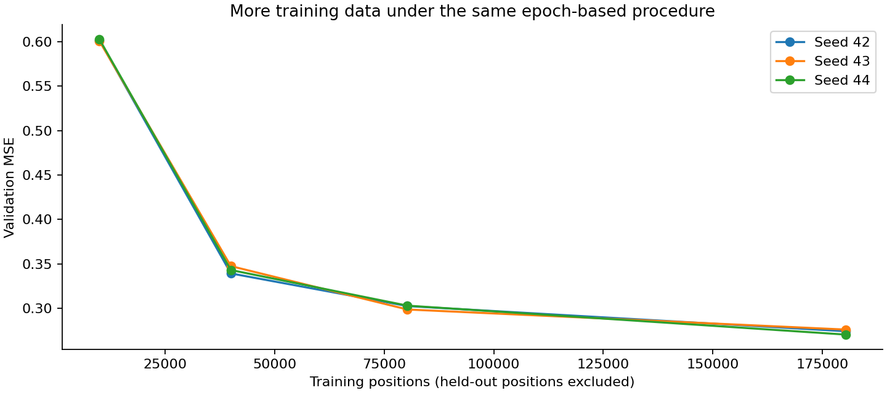
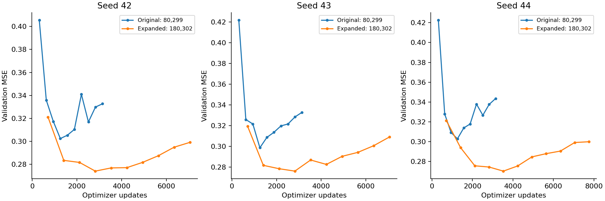

CHESSENGINE · DEVELOPMENT EXPERIMENT
Does more training data help?
Mean validation MSE fell from 0.30132 to 0.27350 across three seeds (9.2% reduction). 3 of three seeds improved. These are development results, not evidence of stronger chess play.
The corpus now contains 200,003 positions, including 180,302 for training. Validation remains 9,789 positions from 2,194 source games. Existing test records are preserved and unused.

Controlled settings and uncertainty
The 128/64 MLP, AdamW settings, early stopping, maximum epochs and validation set are fixed. New samples come from additional training-assigned games in the same January 2013 archive. New labels use the original Stockfish 19 binary, 10,000 nodes, one thread and 32 MB hash per worker. Two independent workers label chunks.
| Seed | Original MSE | Expanded MSE | Difference (new − old) | 95% game-bootstrap CI |
|---|
| 42 | 0.30243 | 0.27411 | -0.02832 | [-0.03750, -0.01888] |
| 43 | 0.29859 | 0.27601 | -0.02258 | [-0.03092, -0.01389] |
| 44 | 0.30293 | 0.27037 | -0.03257 | [-0.04085, -0.02445] |
Seed standard deviation: 0.00237 original; 0.00287 expanded. Intervals use 2,000 paired source-game bootstrap resamples conditional on each selected checkpoint pair. They do not include retraining or model-selection uncertainty, and are not three independent test sets.
Optimization and compute

| Dataset | Seed | Frozen train MSE | Validation MSE | Selected epoch | Total updates | Epoch work (s) |
|---|
| Original | 42 | 0.19186 | 0.30243 | 4 | 3140 | 2.82 |
| Original | 43 | 0.18537 | 0.29859 | 4 | 3140 | 2.67 |
| Original | 44 | 0.18655 | 0.30293 | 4 | 3140 | 2.84 |
| Expanded | 42 | 0.18945 | 0.27411 | 4 | 7050 | 6.27 |
| Expanded | 43 | 0.18527 | 0.27601 | 4 | 7050 | 6.65 |
| Expanded | 44 | 0.16840 | 0.27037 | 5 | 7755 | 6.70 |
Preparation: 103.4s. Labeling elapsed time: 822.2s; summed worker time: 1642.7s. Expanded training/validation epoch work: 19.6s; diagnostic/training invocation: 216.6s. Report generation is excluded. Paid compute: C$0.
Interpretation and next step
Larger training sets receive more updates per epoch. The curves expose that difference, but this experiment is not an update-matched control. The result measures the combined effect of additional data and this training procedure. One sampling seed and one historical source limit conclusions about distribution coverage. Repeated use of validation data makes these development findings; reserve fresh final data before confirmatory evaluation.
Next, separate the effects of compute and data with a matched-update comparison, then assess any candidate in controlled chess matches. Released weights and public deployment remain unchanged.
Reproducibility